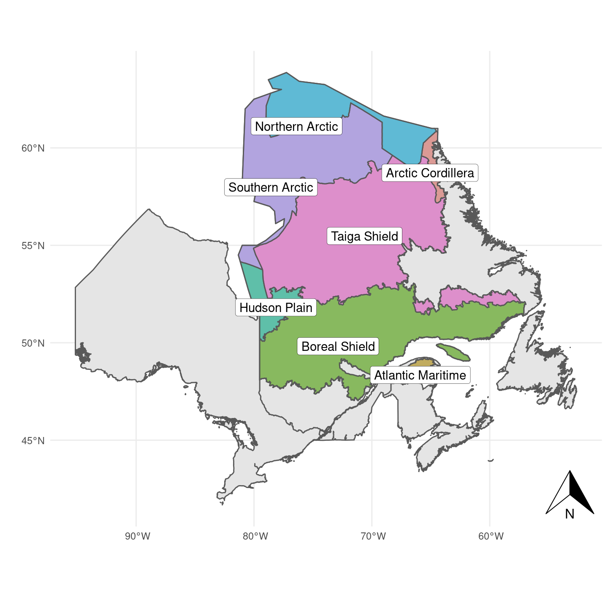
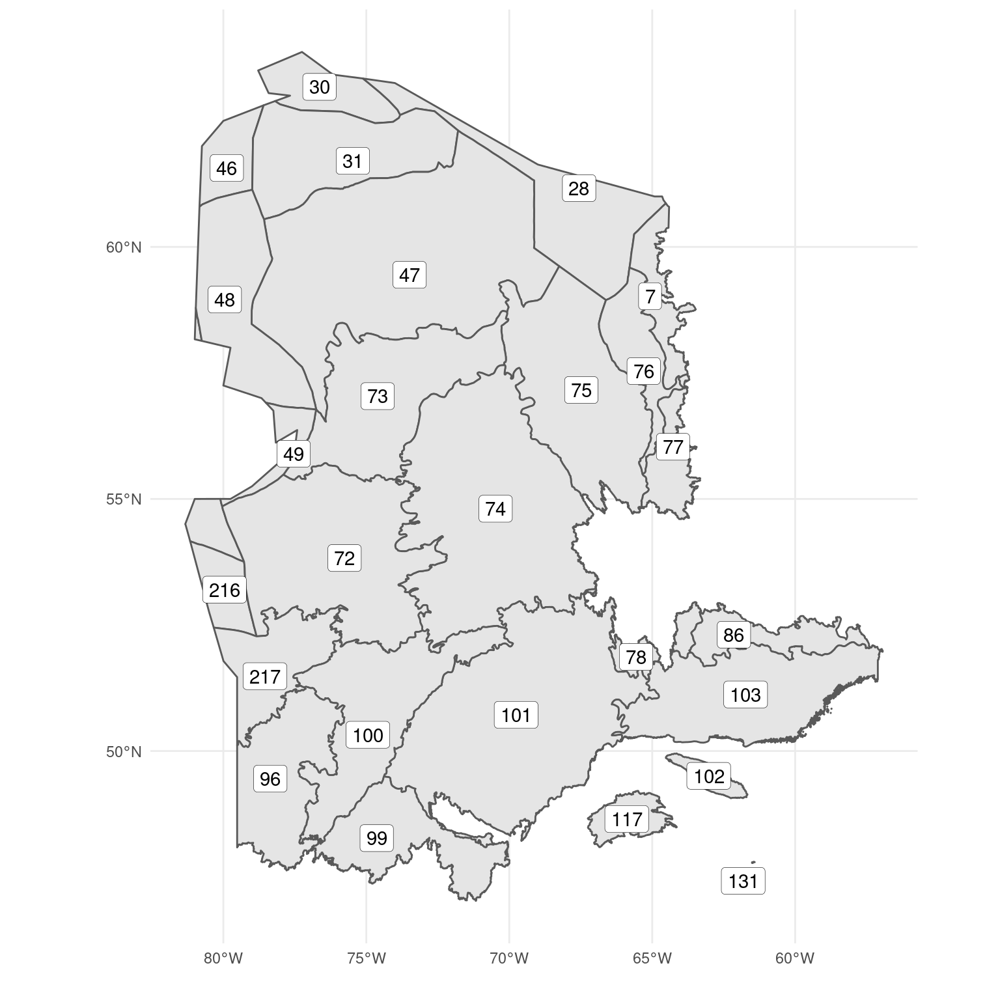
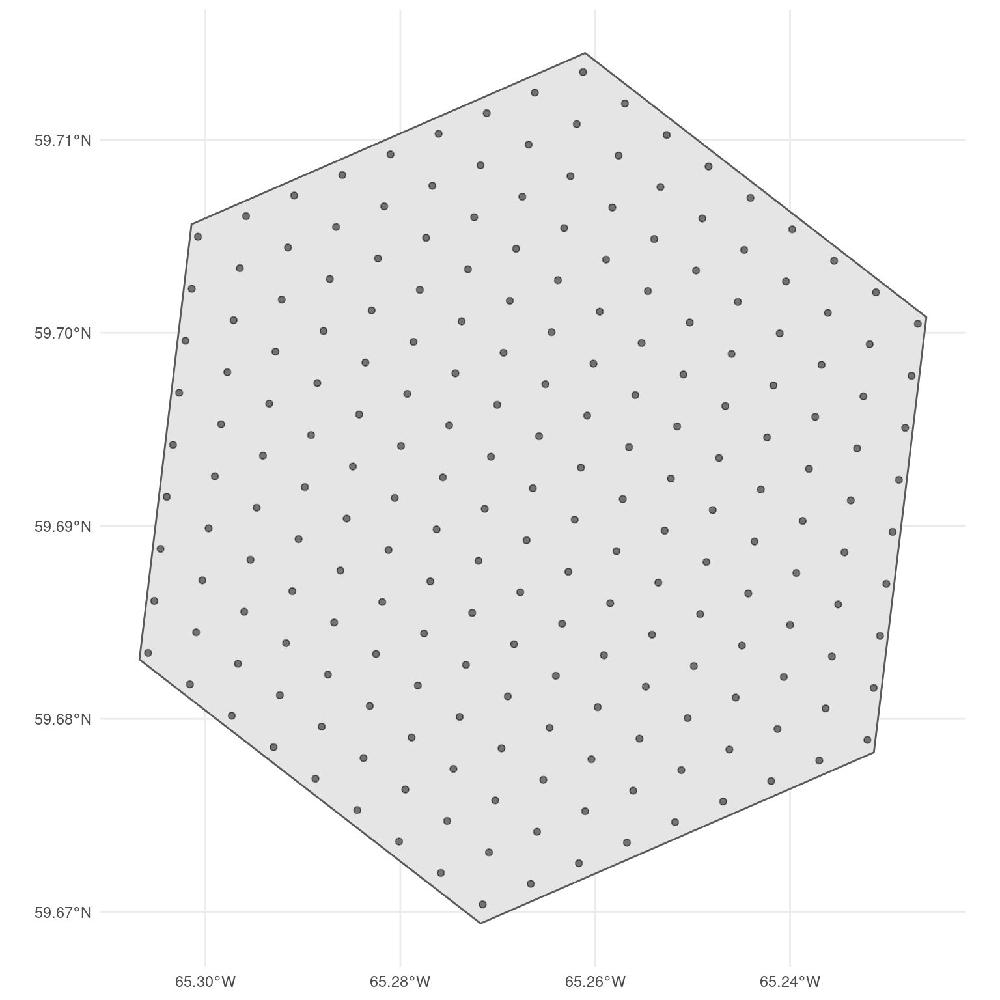

| Ecozone | Area (% prop) |
|---|---|
| Taiga Shield | 56275939 (35.74) |
| Boreal Shield | 51342357 (32.61) |
| Southern Arctic | 27378100 (17.39) |
| Northern Arctic | 12918116 (8.2) |
| Hudson Plain | 6235409 (3.96) |
| Arctic Cordillera | 1713974 (1.09) |
| Atlantic Maritime | 1587877 (1.01) |
2 Sampling frame
Area of study
The study area for Quebec is outlined in Figure 2.1. It was expanded beyond the Boreal boundary to include the Arctic ecosystems. The study area contains a total of 7 ecozones, and their sizes and proportions are described in Table 2.1:

In order to accommodate habitat heterogeneity, the study area was hierarchically stratified into different levels of spatial aggregation. Below, we will provide a brief description of each of these strata, ranging from the ecoregion level to the specific sampling point level. For a more comprehensive explanation of the reasoning behind each stratification, please refer to Van Wilgenburg (2020).
Ecoregion
The ecoregion is the first level of aggregation in the sampling design. The sample size and habitat inclusion probability (described in the next chapter) are defined for each separate ecoregion. There are a total of 26 ecoregions in the study area (Figure 2.2), and their details are described in Table 2.2. Ecoregion 131 was excluded from the study area because it was too small to support enough sampling points for the random sampling design.
| Code | Name | Area (% prop) |
|---|---|---|
| 101 | Central Laurentians | 19431698 (12.35) |
| 47 | Central Ungava Peninsula | 18114106 (11.51) |
| 74 | New Quebec Central Plateau | 17262947 (10.97) |
| 72 | La Grande Hills | 12929820 (8.22) |
| 75 | Ungava Bay Basin | 9671186 (6.15) |
| 103 | Mecatina Plateau | 9388108 (5.97) |
| 100 | Riviere Rupert Plateau | 9083301 (5.77) |
| 73 | Southern Ungava Peninsula | 8247511 (5.24) |
| 96 | Abitibi Plains | 6787969 (4.31) |
| 99 | Southern Laurentians | 5853410 (3.72) |
| 48 | Ottawa Islands | 5766770 (3.67) |
| 31 | Northern Ungava Peninsula | 5714604 (3.63) |
| 28 | Meta Incognita Peninsula | 5295229 (3.37) |
| 217 | James Bay Lowlands | 4482672 (2.85) |
| 86 | Mecatina River | 2552186 (1.62) |
| 46 | Southampton Island Plain | 2550507 (1.62) |
| 76 | George Plateau | 2501318 (1.59) |
| 30 | Wager Bay Plateau | 1908283 (1.21) |
| 77 | Kingarutuk-Fraser River | 1861164 (1.18) |
| 216 | Hudson Bay Lowland | 1752738 (1.11) |
| 7 | Torngat Mountains | 1713974 (1.09) |
| 117 | Appalachians | 1553719 (0.99) |
| 78 | Smallwood Reservoir-Michikamau | 1148044 (0.73) |
| 49 | Belcher Islands | 946717 (0.6) |
| 102 | Anticosti Island | 790375 (0.5) |
| 131 | Iles-de-la-Madeleine | 34149 (0.02) |
The sample size for this study was determined solely based on the size of the ecoregion. While the BOSS design considered bird species richness to increase sampling in regions with more bird species, we chose not to use this metric because it may be biased by sampling efforts in the southern region, potentially increasing sampling bias in already well-covered regions. Our goal was to sample 2% of the available hexagons (PSU described below) in each ecoregion. We defined a hexagon as available for sampling if at least 20% of it contained natural habitat types.

Primary Sampling Unit (PSU)
We followed the BOSS design by using a 5 km diameter hexagon (Figure 2.3) as the Primary Sampling Unit (PSU). This was the lowest level of aggregation before performing the stratified sample with the GRTS algorithm. We selected only the hexagons whose centroid fell within the study area. Similarly, each hexagon was classified into one of the ecoregions using the same centroid rule. The number of hexagons, available hexagones, and sample size is described in Table 2.3.
| Ecoregion code | Ecoregion name | Total Hexagons | Available Hexagons | Sample size |
|---|---|---|---|---|
| 7 | Torngat Mountains | 866 | 866 | 17 |
| 28 | Meta Incognita Peninsula | 65 | 65 | 1 |
| 30 | Wager Bay Plateau | 174 | 174 | 3 |
| 31 | Northern Ungava Peninsula | 2307 | 2307 | 46 |
| 46 | Southampton Island Plain | 206 | 206 | 4 |
| 47 | Central Ungava Peninsula | 9580 | 9580 | 192 |
| 48 | Ottawa Islands | 36 | 36 | 1 |
| 49 | Belcher Islands | 4 | 4 | 0 |
| 72 | La Grande Hills | 7490 | 7490 | 150 |
| 73 | Southern Ungava Peninsula | 5019 | 5019 | 100 |
| 74 | New Quebec Central Plateau | 10773 | 10773 | 215 |
| 75 | Ungava Bay Basin | 5549 | 5549 | 111 |
| 76 | George Plateau | 1482 | 1482 | 30 |
| 77 | Kingarutuk-Fraser River | 1184 | 1184 | 24 |
| 78 | Smallwood Reservoir-Michikamau | 715 | 715 | 14 |
| 86 | Mecatina River | 1607 | 1607 | 32 |
| 96 | Abitibi Plains | 4139 | 4139 | 83 |
| 99 | Southern Laurentians | 3563 | 3563 | 71 |
| 100 | Riviere Rupert Plateau | 5539 | 5539 | 111 |
| 101 | Central Laurentians | 11970 | 11970 | 239 |
| 102 | Anticosti Island | 487 | 487 | 10 |
| 103 | Mecatina Plateau | 5711 | 5711 | 114 |
| 117 | Appalachians | 957 | 957 | 19 |
| 131 | Iles-de-la-Madeleine | 10 | 10 | 0 |
| 216 | Hudson Bay Lowland | 23 | 23 | 0 |
| 217 | James Bay Lowlands | 2293 | 2293 | 46 |
Secondary Sampling Unit (SSU)
For each PSU hexagon, we created a grid of Secondary Sampling Units (SSUs). The SSU represents the ultimate sampling locations to be utilized in the field. Instead of using the proposed 300-meter distance from the BOSS design, we followed the approach used in the Ontario regionalization design, where each SSU was separated by 294 meters. We made this small reduction in distance to ensure that the same number of SSUs were present across all PSU hexagons. Figure 2.3 displays the distribution of Secondary Sampling Units (SSUs) within a hexagon.
